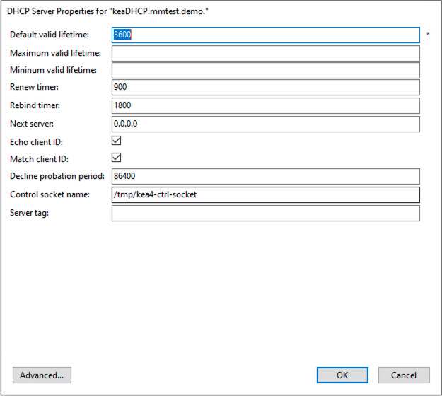

ISC Kea DHCP (Management Console, obsolete)
Danger
Starting with Micetro 10.0, older versions of the Kea DHCP server are no longer supported. See System Requirements for a list of supported versions. You need to remove your existing (older) Kea DHCP servers from the system, and update them to a supported version of Kea before updating to Micetro 10.0 from an older version of the Men&Mice Suite. Not doing so could result in lost access to and data from the older Kea servers in Micetro.
For the preferred method of managing Kea in Micetro see dhcp-kea.
Kea DHCP Server Properties
{kind=link}
- Default/Maximum/Minimum Valid Lifetime
Specifies the time after which a lease will expire if not renewed.
- Renew Timer
Specifies the time when a client will begin a renewal procedure.
- Rebind Timer
Specifies the time when a client will begin a rebind procedure.
- Match Client ID
Specifies if the server should ignore the client identifier during lease lookups and allocations for a particular subnet.
- Echo Client ID
Specifies if the server should send back client-id options when responding to clients.
- Decline Probation Period
Specifies a probation time that will be set on addresses that are in use by some unknown entity.
- Next Server
Specifies the server address to use when clients want to obtain configuration from a TFTP server.
Control Socket
- Name
The path to the UNIX socket. Cannot be empty.
- Server tag
The name used for this server in a High Availability setup. (See Kea DHCP High Availability.)